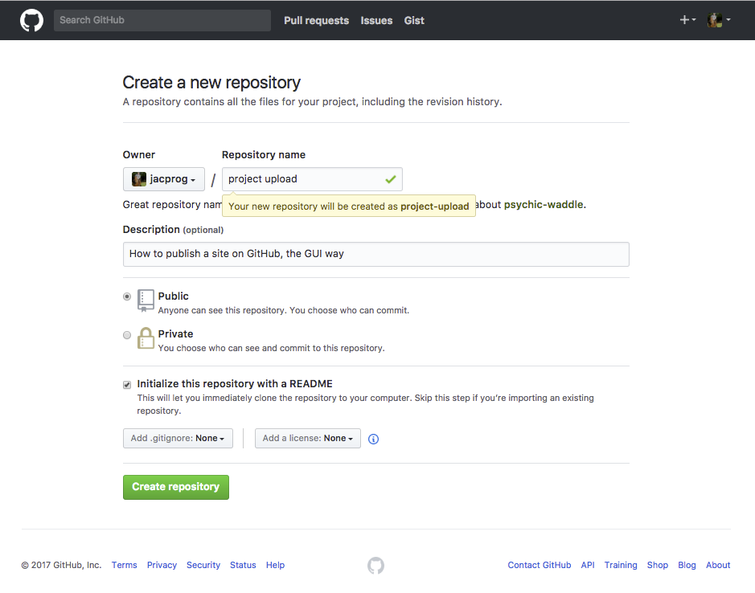
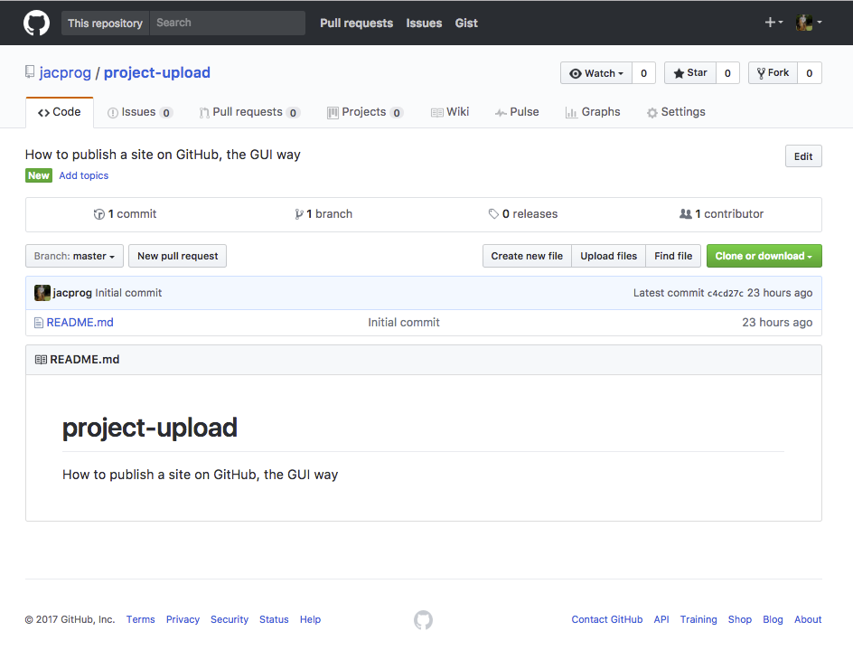
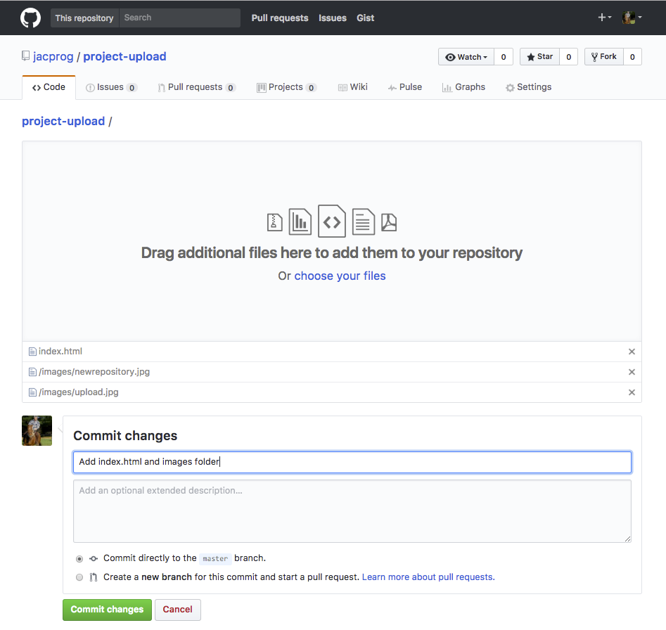
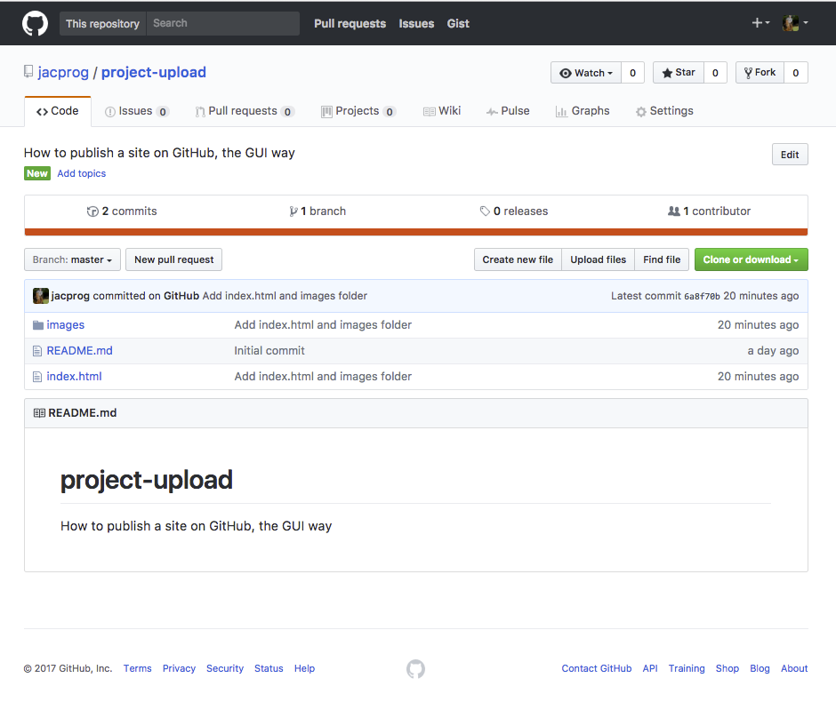
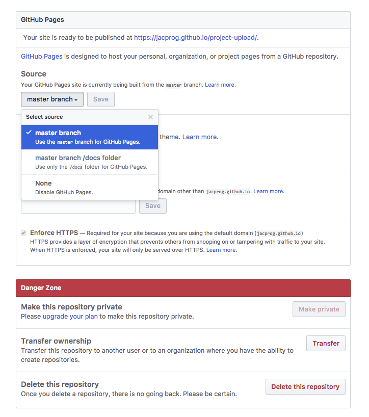
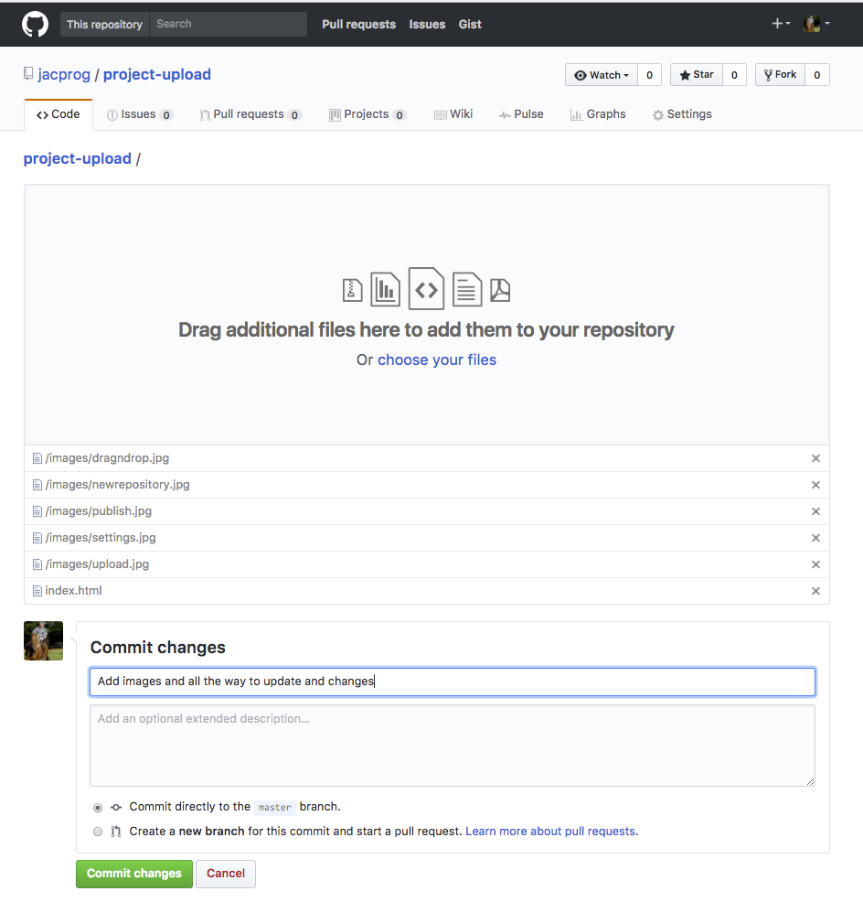

How to get a basic site on GitHub: Project Upload
This is the way I figured out, at this point of my learning.
Step 1
Get a GitHub account.
If Not, go to https://github.com Use the SantaFe email @my.sfcollege.edu to get a free account. Additionals emails can be added later in settings.
On the profile page at https://github.com/your user namepage, click the PLUS sign at the top right of page, chose: New repository and create it with the name you want.
Here it is: project upload, GitHub will fill in the blank, it is now project-upload.
Important!
Tick the box: Initialize with a README, the descrition will say what this project is about.
Clik on the green button: Create repository.

Step 2
Click on the Upload Files button to get our files up there!
This will open a drop area.

Step 3
Drag and drop your files and folders
Notice that I drag the index.html file, and the images FOLDER, that way all the images got uploded at once.
For now, there is one HTML page: index.html, plus one folder, with two images
Add some comments: Add index.html and images folder
Click the green commit changes button

Step 4
Notice the index.html file, and the images FOLDER, that way all the images got uploded at once.
And there is the README, that was created first.
For now it is just a colection of files and folder, no site. If all you want is a back of your files, you can stop here. If you want the site to build:
Chose Settings, up on the right

Step 5
Scroll down to GitHub Pages
Under Source, click the None drop down menu, select Master Branch, save; Now GitHub will provide the URL for your site:
Https:// jacprog.github.io.project-upload/
One more thing: See the danger zone at the bottom:
There is an option to delete the repository.

Step 6
Updates and changes
Go back to the main page, find it by going back to the Your profile page, and select the repository.
Click Upload files, drag and drop the files and folders that have changes.
Click the green commit changes button.
Your updates are there to be seen.

Your Project is now published from GitHub.
My next goal is to have all this at the command line Too. Your help is welcome!
Please email questions or comments using the link below.